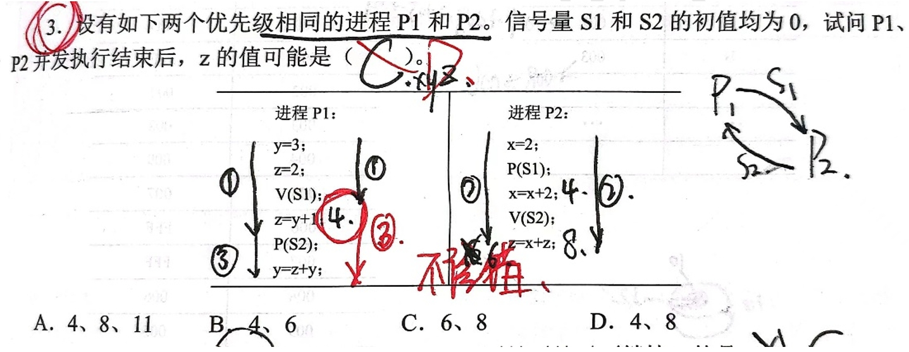
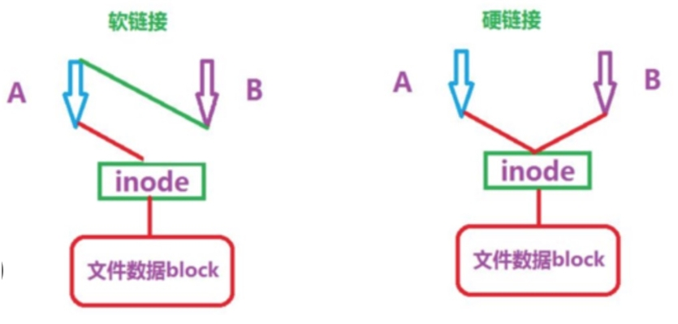

计算机科学基础细节知识总结——操作系统
作者： 禾旺
目录：- 第一章：概述
- 第二章：进程与同步
- 第三章：存储管理（见计组）
- 第四章：文件管理
- 第五章：设备管理（见计组）
第一章：概述
- 要注意操作系统的几大功能：进程管理、存储管理、文件管理、设备管理，这四个词对应四章，不同章节的内容不能混淆，比如“按名存取“就是专属于文件管理的内容，别的部分不包含这个功能。
- 注意题目的问题所属的类别，当问到“是否属于操作系统的操作”时，要思考选项是否属于硬件操作。
- 广义指令就是系统调用命令，而命令解释器属于命令接口，shell是命令解析器，也属于命令接口，系统中的缓存全部由操作系统管理，对用户是透明的
- 系统调用包括很多内容（进程控制、文件系统控制、系统控制、内存管理、网络管理、用户管理、进程间通信等），几乎各个功能都需要用到系统调用。
- 多道程序的引入相比单道程序来说，失去了封闭性和顺序性，由于资源竞争产生了制约性
- 实时操作系统必须在控制对象规定时间内完成对外部事件的处理，采用抢占式优先级调度算法
- 操作系统完成进程调度可以不需要硬件支持
- 内部异常：指来自CPU内部的异常，如电源掉电、地址非法、校验错、页面失效（缺页属于异常！！）、非法指令、地址越界、除数为零、陷入指令、算术溢出等，都在指令执行过程中产生，由于内部异常不能被屏蔽，所以产生立马处理，所以也是在执行过程中处理，有的异常必须终止进程，则不能回到原断点执行
- 中断：指来自CPU执行指令以外事件的发生，如IO中断、时钟中断，他们与CPU当前运行的程序无关
- 可以引发中断的情况：外部事件（如按ESC），内部异常（如缺页、浮点数上溢（浮点数下溢则直接当作0处理，不会中断））、Cache完全是硬件机构，不会中断
- 应用程序在用户态下想执行高危指令 (例如需要输入输出) 需要发出访管（即trap指令、陷入指令）中断，由硬件完成用户态到核心态的转变
- 中断服务：
中断隐指令（硬件直接控制执行，不属于指令系统，因此不是指令）：关中断（将中断触发器置0）、保存断点（保存PC的内容）、识别中断源、形成中断服务程序入口地址并送入PC（用来开启中断服务程序！）
中断服务程序（操作系统）：保存现场（保护通用寄存器的内容）、中断事件处理、恢复现场、开中断、中断返回（中断返回指令不等于无条件返回指令，它不会保存TLB和Cache，需要恢复所有寄存器的状态） - 中断屏蔽字需要写清矩阵，中断优先级比当前执行程序优先级低的中断信号CPU是检测不到的，被屏蔽的中断源发出的信号CPU也检测不到，屏蔽字中的“1”越多，表示自身的优先级越高。
- 中断向量本身是中断入口程序的地址，则中断向量地址就是该中断入口程序地址的地址
- 中断PC保护由硬件完成，是为了保证安全可靠
- 中断优先级：硬件故障>访管指令>外部中断>程序性中断>重新启动
- 中断判优可以用软件或硬件实现，一般是硬件排队器
- 中断优先级分为响应优先级和处理优先级，中断屏蔽字可以改变后者
- 系统调用、外部中断、缺页：在用户态发生，要执行的程序在核心态下执行，进程切换属于系统调用执行的程序，只会发生在核心态（要区分“调用”和“执行”）
- 开/关中断操作属于特权指令，只能在内核态下运行
- 需要切换到内核态执行的指令（特权指令）有：有关对IO设备操作的指令、有关访问程序状态的指令、存取特殊寄存器指令、修改页表
不需要切换到内核态执行的有：通用寄存器清零 - 子程序调用：保存程序断点（该指令的下一条指令的地址），不用保存PSWR；
- 分层式操作系统结构清晰，便于调试，各层之间只能单向依赖或单向调用，调整时只要不改变相应层间接口，就不会影响其他层，易于扩充维护，但依赖关系固定，不够灵活，由于指令往往需要穿越多层，导致效率不高。
- 宏内核与微内核是对立的，优缺点也是对立的，微内核的内核态、用户态切换频繁，导致操作系统开销较大（降低了效率），但可靠性好、易拓展、易移植，如今的多数支持多CPU的OS都是微内核的，包括windows。
- 应用软件给用户提供解决具体问题的界面，系统软件（如操作系统）为用户提供基础操作界面
- Linux系统支持多用户、多任务：多用户指的是一台主机允许多个用户（用户=账号）同时登陆；多任务指的是一台主机允许多个进程客户端通过同一个账户登录
- 操作系统引导： 激活CPU、启动BIOS程序（位于ROM的自举程序、用于启动具体的设备，所以在硬件自检之前）、硬件自检、加载带有操作系统的硬盘、加载主引导记录（MBR）、扫描硬盘分区表、加载分区引导记录（PBR）、加载启动管理器（即操作系统的引导程序）、加载操作系统内核
- 操作系统的初始化过程不包括文件系统建立过程、更不包括硬盘分区，但包括中断向量表的创建，这些的包含关系应当在理性思考之后得出结论 -
- 操作系统引导：操作系统的程序最终会被送到主存（是RAM）的系统区中
- 32位操作系统指的是操作系统最多能同时访问2^32个地址，而32位处理器指的是CPU的硬件特性，低位数的CPU不能运行高位的操作系统，而高位的CPU可以运行低位的操作系统
第二章：进程与同步
- 要根据语句的态度优选最可能的答案
- 进程异步的伪代码题目中，使用向下的箭头+标号的方法进行模拟计算如图，但应该注意要把每个进程都运行完整： 
- PCB中的内容包括：进程描述信息、进程控制和管理信息、资源分配清单、CPU相关信息，（还有进程通信信息，包括消息队列指针、消息资源信号量、消息互斥访问信号量）。PCB中不包含进程地址空间大小（我的理解是每个进程的地址空间不需要在PCB中显示，只需要访问时由页地址机制管理即可）
- 进程调度属于进程管理，和进程通信无关
- 管道（进程通信）可以实现半双工通信，但不能实现“双向数据传输”
- 管道系统中允许多个进程向管道写入数据，允许多个进程从管道中读数据，但不是同时。
- 进程通信中有共享缓冲区，它和进程自己的内存空间是两块地方
- C语言编写内存分布：正文段（代码和全局变量、常量）、数据堆段（动态分配的存储区）、数据栈段（临时使用的数据变量）
- 睡眠=阻塞，唤醒=就绪（可以重新竞争CPU），程序退出临界区（释放资源）会唤醒处于等待队列中的就绪态进程（记住！）等待进入临界区的进程不会主动放弃CPU
- 某进程请求的IO完成发出的中断操作会将该进程的状态从等待变为就绪
- 多线程系统适用于有多个输入的环境（例如矩阵乘法运算、HTTP请求等）
- 进程中的线程共享进程内的全部资源，但某线程的栈指针对其他线程是透明的
- 如果一个进程有多个内核级线程，则只要有一个线程处于就绪状态则该进程处于就绪状态，如果有一个线程正在执行，则该进程正在执行，进程阻塞指的是所有线程都阻塞
- 关于进程的状态变化需要把所有可能发生的变化都写清楚
- 调度分为作业调度（高级，每个作业只执行一次，表示作业开始）、内存调度（中级，把作业放到辅存挂起，或从辅存调入就绪）、进程调度（低级，让进程获得CPU）
- 进程处于临界区时，只要不破坏临界区的使用规则，就可以进行处理机调度，比如打印机资源，必须允许调度否则性能很差
- 带权周转时间=周转时间/实际运行时间，这个值肯定是大于1的
- FCFS不能抢占，时间片轮转不能不抢占
- FCFS算法不利于IO繁忙型作业，有利于CPU繁忙型作业，因为CPU繁忙型作业可以一直计算，从容完成，而IO繁忙型作业是指在CPU处理时要经常进行IO，导致完成后还需要排队等待调度，因此等待时间长。SJF算法与之相反。
- 用户态和内核态的切换叫做模式切换，不是上下文切换，因为没有改变当前进程，上下文切换只能发生在核心态；调度是决策行为，切换是执行行为
- 不同进程创建的变量不互斥！不同线程对属于同一进程的变量要互斥访问；
- 进程互斥原则：空闲让进、忙则等待、有限等待（进程不能等太久，会饥饿）、让权等待（不能进入时，立即放弃处理机）
- 可重入代码（即纯代码）允许多个进程访问，不允许任何进程修改。如果要实现修改，进程把执行中部分拷贝到其数据区，只修改该数据区中的内容，不改变共享的代码（适用于共享程序段），其提高系统性能的原因是将多个程序段映射到同一段内存中去，减少了程序段的换入换出，即减少了兑换数量
- 相关临界区指的是访问临界资源的代码段
- 皮特森算法（双让步）不会导致饥饿，但不满足“让权等待”，会主动放弃CPU的只有信号量机制，即实现让权等待
- 硬件指令方法包括TestAndSet、Swap，都是原子操作，调度时在等待进程中随机选择，优点是简单，缺点是会忙等、会饥饿
- 饥饿的判断：如果有源源不断的同类进程进入，别类进程有没有获得处理机的机会
- semaphore：同步信号量，是用来实现同步的（而不是互斥，虽然一般也用来实现互斥），循环过程需要加while（）（先在草稿纸上写好）
- 互斥信号量的初值一般设为1，同步信号量的初值要根据存量资源确定
- 进程在进入管程之前使用x.wait()把自己放进x的阻塞队列里，出管程的时候使用signal()释放管程
- mutex要尽量靠近
- 在第一段写出问题属于什么互斥同步问题（前驱关系、生产者消费者、哲学家进餐、吸烟者、读者写者）
- 哲学家进餐问题模板：
- 定义大锁：semaphore lock=1；
- 定义资源数：int a=9,b=8,c=6;
- Process(){
- While(1){//循环检查资源是否足够
- P(lock);//lock的作用是对资源变量的互斥访问
- If(所有的资源都够){
- 所有资源int减小；
- 取xxx资源；
- V(lock);
- Break;
- }
- V(lock);
- }//一口气拿完所有的资源
- 做进程该做的事；
- P(lock);
- 归还所有资源；
- V(lock);
- }
破坏互斥条件：是系统资源能够共享使用
破坏不剥夺条件：一个以保持某些资源的进程如果不能申请到足够的资源，那么必须释放已持有资源，可能导致前一阶段工作失效，效率较低
破坏请求和保持条件：进程运行前必须一次性申请所有资源（即静态资源分配策略）；
破坏循环等待条件：顺序资源分配法，给资源编号，进程按照顺序申请
死锁避免：银行家算法（区分皮特森算法（双让步）），需要知道进程所需的资源数，不会给可能造成死锁的进程分配资源，避免进入不安全状态（不一定就是死锁状态，但会导致死锁）
死锁检测：分配资源时不采取任何措施，但提供死锁的检测和解除手段（死锁定理）
第三章：存储管理（见计组）
第四章：文件管理
- 系统运行以进程为基本单位，而用户进行输入、输出时以文件为基本单位（逻辑文件是文件存取的基本单位）
- UNIX系统中，输入输出设备被视为特殊文件，其文件的索引结构放在索引节点中，超级快用来描述文件系统
- 文件目录项=FCB（组成文件目录的目录项，也不要太死板，需要看题目要求），包含文件基本信息、存取控制信息、使用信息
- 系统级安全管理包括注册、登录
- 对文件的访问限制通常由用户访问权限和文件属性决定
- 对文件的访问需要路径名（会包括文件名）即可
- 为防止文件受损，通常采用备份的方法，而“存取控制矩阵“适用于多用户之间的存取权限保护
- “平均查找的记录数“相当于成功查找长度，例如100个顺序文件的”平均查找记录数“为50
- 逻辑文件分为无结构文件（即流式文件）和有结构文件（顺序文件、索引文件、索引顺序文件、直接文件或散列文件）；
物理文件分为连续分配、连接分配（默认隐式分配：目录项含有文件第一块和最后一块的指针，每个块都含有指向下一个盘块的指针；显式分配链接：使用FAT）、索引分配：inode（重点是混合索引分配） - 磁盘顺序存储并不是一无是处，其存储速度很快，但一般认为是低效的
- FCB一般集中存放，这样查找文件的速度更快
- 一个文件的inode只有一个，无论被多少个进程打开
- inode将文件的描述信息从文件目录项中分离出来，减少了查找文件时的IO信息量
- 索引节点总数即文件总数，与单个文件的大小无关
- inode访问磁盘块时，如果经过一级索引节点，则需要把该节点写入内存，算作一次访问磁盘。读文件至少要经过一次索引节点，再读磁盘具体内容，所以至少会读两次磁盘
- 时刻注意文件的读入和写回都会启动磁盘一次
- 注意1596（从1开始）/512=3..60，则在第3个记录（从0开始）中查找第60字节（从0开始），对于题目中的每个数字都要注意是从0开始还是从1开始！！
- 树形目录一般都会使用相对目录，即从相对当前文件位置开始往下检索（如果某个分量名未找到，则停止寻找），以减少从根目录查找带来的时间开销
- 文件检索完成后得到的是文件的逻辑文件
- 查询方式分为顺序检索和Hash法，通常使用顺序检索
- 文件共享包括硬链接和符号链接（软连接），如下图示，箭头表示用户文件目录项，左图inode引用数为1，右图引用数为2 
- 空闲盘块管理一般使用空闲空间链表和位示图
- 位图法表示空闲盘块的时候每一个比特可以表示一个盘块
- 简答题需要答出“关键点” 比如FCFS算法在Flash存储器里比CSCAN算法在机械磁盘里的优势在于“不需要寻道和旋转延时”
- open()指的是把指定文件的目录复制到内存，需要路径名、文件名，而read()需要文件描述符（对于每个进程来说是独立的）、缓冲区首地址、传送的字节数
- Linux中的虚拟文件系统（VFS）包括四个对象类型：超级块对象、索引节点对象、目录项对象、文件对象
第五章：设备管理（见计组）
后记
对于细节的知识整理不成系统，但是在处理很多细节的问题时可以提供参考，希望可以给读者以启发和帮助。